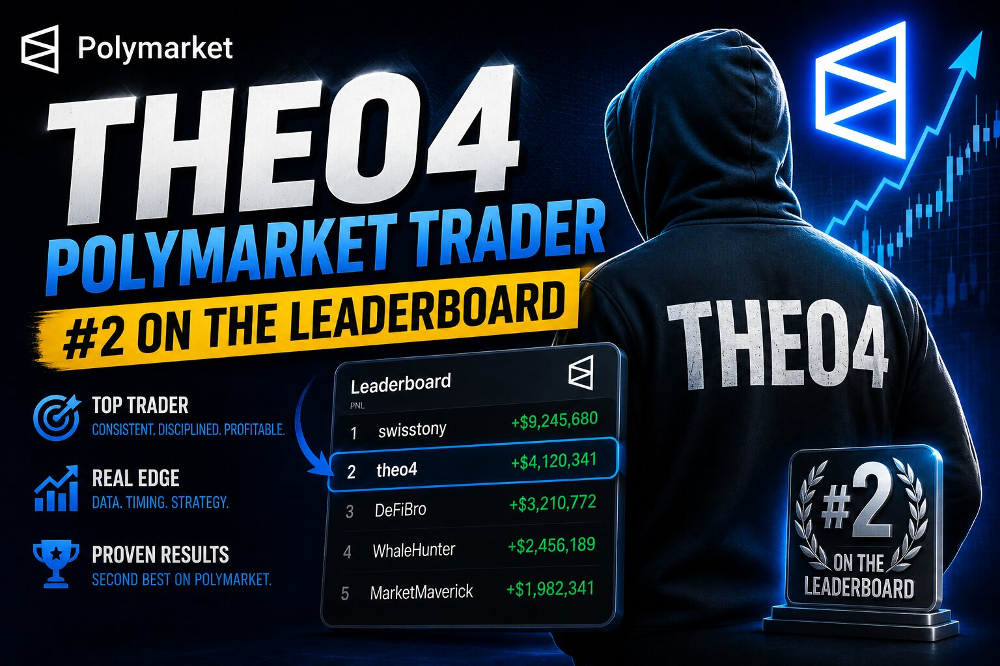

Theo4: The Second Wallet Behind Polymarket's Biggest Election Bet

Some Polymarket profiles tell a story through hundreds of thousands of trades. Theo4 tells its story through the opposite: 14 total predictions since joining in October 2024, an $8.3M biggest win, and a current positions value of $0.00. On the surface, that's barely enough activity to call someone a trader. But Theo4 was never really operating on its own — it was one piece of the largest coordinated wallet cluster in Polymarket's history.
Part of a four-account cluster
In late October 2024, as reporters raced to figure out who was behind the outsized pro-Trump buying pressure on Polymarket, a company spokesperson confirmed that four accounts — Fredi9999, Theo4, PrincessCaro, and Michie — were being run by the same person: a French national described as having "extensive trading experience and a financial services background." Together, the four wallets held a combined $28.6M in Trump-victory shares, making up more than 1% of all money wagered on that single market.
Fredi9999 was the headline-grabbing name because it was identified first and carried the largest visible balance, but Theo4 wasn't a minor bystander — it was one of the top five holders of Trump shares on the entire platform, in a market that had over $2.4 billion wagered on it.
Why spread the position across multiple wallets?
Splitting a large directional bet across several accounts is a common technique for traders who want to avoid moving the price against themselves. A single wallet placing enormous market orders on one side of a contract tends to push the price up as it buys, making every subsequent share more expensive. Distributing purchases across Theo4, Fredi9999, and the others let the trader accumulate a bigger aggregate position while keeping each individual wallet's footprint smaller and less conspicuous — at least until blockchain analysts started connecting the wallets by their funding sources and trading patterns.
By the first week of November 2024, Chainalysis researchers had expanded their estimate of the network beyond the original four names, identifying as many as 11 linked accounts tied to the same trader, with combined realized profit reported above $85M.
A profile built for one trade
That's the context missing from Theo4's page today. Fourteen trades is a strange number for an account with an eight-figure biggest win — until you realize this wallet was purpose-built to hold a slice of one enormous, binary bet on a U.S. presidential election, not to trade broadly across Polymarket's thousands of markets. Once that election resolved, there was no ongoing strategy left to execute. The account went quiet because its entire reason for existing had already played out.
The takeaway
Theo4 is a useful case study in reading Polymarket profiles critically. A low trade count and an idle position value don't necessarily mean an inactive or unsuccessful trader — sometimes they mean you're looking at one node in a larger, coordinated position that was engineered to stay under the radar for as long as possible. The real story isn't in Theo4's 14 trades; it's in what those 14 trades were quietly part of.
See Theo4's history and current positions directly on Polymarket.